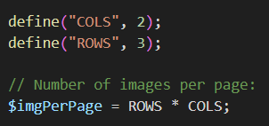
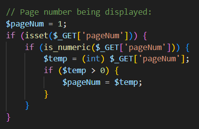
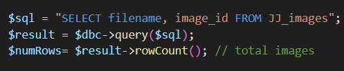
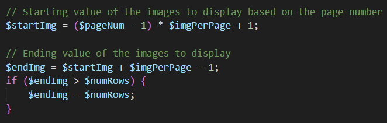
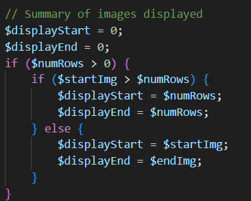
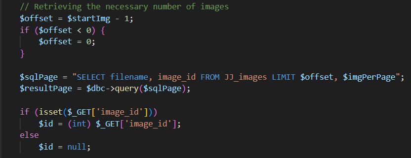

Pagination
Pagination is the process of limiting the number of results displayed when a list is too long to display on one page. In this case, you split the list across pages and create navigation buttons to get to the next or previous set of pages.
You use the url (query string) to say which page you want, and the database uses LIMIT offset, count to send back just that set of results.
Step-by-step guide:
-
Determine how many items to display at a time
- Add a contant
ROWSand compute the amount of images per page:

- Add a contant
-
Track the current page number from thr query string

-
Count the total number of records in the database

-
Compute the start/end indices for the current page


-
Convert to MySQL
offsetand fetch just this page
- Make sure this is all in a try/catch block
- Create the previous/next navigation and output as a table